18 Normal Approximation
Review
$$ \newcommand{X}{} \newcommand{Y}{}
$$
In the last chapter, we saw that the sample mean is an unbiased estimator of the population mean—and that this is true whether we’re estimating a proportion or a general mean. Now we need to work out how much our estimates vary from sample to sample. We’ll do this for proportions first, where the formulas are simplest, then use the same ideas for general means later.
The Bootstrap
The Sample \[ \begin{array}{r|rrrr|r} i & 1 & 2 & \dots & 625 & \bar{Y}_{625} \\ Y_i & 1 & 1 & \dots & 1 & 0.68 \\ \end{array} \]
The Bootstrap Sample
\[ \begin{array}{r|rrrr|r} i & 1 & 2 & \dots & 625 & \bar{Y}_{625}^* \\ Y_i^* & 1 & 0 & \dots & 1 & 0.68 \\ \end{array} \]
The Population
\[ \begin{array}{r|rrrr|r} j & 1 & 2 & \dots & 7.23M & \bar{y}_{7.23M} \\ y_{j} & 1 & 1 & \dots & 1 & 0.70 \\ \end{array} \]
The ‘Bootstrap Population’ — The Sample \[ \begin{array}{r|rrrr|r} j & 1 & 2 & \dots & 625 & \bar{y}^*_{625} \\ y_j^* & 1 & 1 & \dots & 1 & 0.68 \\ \end{array} \]
Last time, we looked at a general method for estimating sampling distributions: bootstrapping.
- Draw a sample of size \(n\) from your sample. That’s a bootstrap sample.
- Calculate your estimator using that sample. That’s a bootstrap estimate.
- Repeat to get draws from the distribution of bootstrap estimates. That’s the bootstrap sampling distribution.
It’s a nonparametric estimate. We’re approximating the sampling distribution without using its parametric form. This is useful because we usually don’t know the parametric form. Estimating the proportion of 1s in a population of binary outcomes is a special case in which we do.
Bootstrapping Proportions
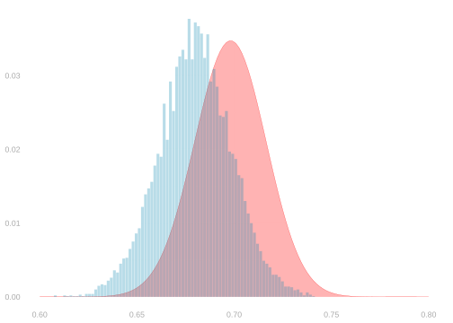
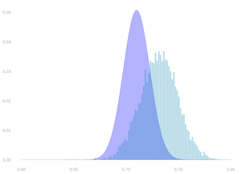
When we’re estimating a proportion, the bootstrap sampling distribution is exactly the same as the parametric estimate we get by plugging the sample proportion into the Binomial distribution’s formula. That’s good when we’ve sampled with replacement, so our sampling distribution is actually Binomial. It’s less good when we’ve sampled without replacement, so our sampling distribution is Hypergeometric.
An Important Limitation of the Bootstrap
The bootstrap is a great method for understanding what we have learned after we have data. It’s easy to use and we usually get good calibration.
But it’s also important to be able to reason about what we can learn before we have data. For this, the bootstrap is not very helpful.
Today, we’ll talk about that. To do it, we’ll introduce a new tool: normal approximation. And we’ll use it for an important ‘before data reasoning’ task: sample size calculation. This is using what you know—or are willing to assume—to choose the size of your study. In particular, to choose it so your confidence intervals are as narrow as you want them to be.
Normal Approximation
The Normal Distribution
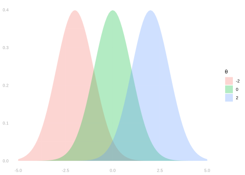
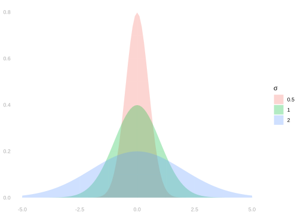
The normal distribution is a parametric family of distributions involving two parameters: its mean \(\theta\) and its standard deviation \(\sigma\). We say a random variable \(X\) is normally distributed with mean \(\theta\) and standard deviation \(\sigma\) if the probability that it’s in an interval \([a,b]\) is given by this integral of its probability density.
\[ P_{\theta,\sigma}(X \in [a,b]) = \int_a^b f_{\theta,\sigma}(x)dx \qfor f_{\theta, \sigma}(x) = \frac{1}{\sqrt{2\pi}\sigma}e^{-\frac{(x-\theta)^2}{2\sigma^2}} \]
We have to talk about the probability that it’s ‘in an interval’ rather than that it ‘takes a value’ because the probability it actually takes on any particular value is zero—it’s an integral from \(x\) to \(x\). This seems like an annoyance, but given what the normal distribution is actually used for, it’s a blessing.1
Normal Approximation
A distribution’s normal approximation is a normal distribution with the same mean \(\theta\) and standard deviation \(\sigma\). These show up everywhere because they’re easy to work with and the approximation tends to be good. Approximation is good, in particular, for the distribution of a mean of independent random variables. Or independent enough ones.
Above, we see three Binomial distributions with their normal approximations: the distributions of the mean of 10, 30, and 90 coin flips. These approximations get increasingly accurate as the number of flips \(n\) increases. That’s universal. It always happens with means. It’s called the Central Limit Theorem.
Exact, Guaranteed, Approximate
For a sample proportion, we can now put three answers to the same question on one line.
- Exact: use Binomial probabilities for sampling with replacement and Hypergeometric probabilities for sampling without replacement. This needs the whole distribution and the sampling design.
- Guaranteed: use Chebyshev. This needs only the mean and variance, but the interval is wide.
- Approximate: use the normal distribution with the same mean and standard deviation. This adds shape information and produces the familiar narrow interval.
The standard deviation is the common yardstick. What changes is how much we claim to know about the distribution around it.
The Width of Normal Distributions
One thing that’s convenient about the normal distribution is that it’s easy to reason about. In particular, it’s easy to reason about the width of its middle x%.
- To include 68.3% of draws, you go out 1 standard deviation from its mean.
- To include 95.4% of draws, you go out 2 standard deviations.
- To include 99.7% of draws, you go out 3 standard deviations.
To get almost exactly 95% of draws, we go out 1.96 standard deviations: \(\theta \pm 1.96\sigma\). Two is close enough in practice, but we tend to write 1.96 anyway. It’s a signal about what we’re doing. You can get a 2 anywhere in a calculation. When you see a 1.96, you know you’re talking about the middle 95% of the normal.
Calibration Using Normal Approximation
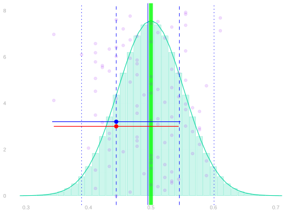
Calibrating interval estimates using normal approximation is easy. You estimate the standard deviation of your point estimator. You go out \(\pm\) 1.96 (estimated) standard deviations from your point estimate.
\[ \text{interval estimate} = \hat\theta \pm 1.96 \hat\sigma \]
We’re choosing our interval’s width essentially the same way we always have. We’re still using the middle 95% of an estimate of the sampling distribution. It just looks different because we have a convenient formula for that width.
Above left, you can see two interval estimates superimposed on the sampling distribution of a sample proportion. The red one is calibrated using the binomial as before. The blue one is calibrated using normal approximation. Above right, you can see the binomial and normal sampling distribution estimates these are based on.
When This Works
This all works if three things are true.
- The sampling distribution needs to be in the right place, i.e. centered on the estimation target.
- The sampling distribution needs to be approximately normal.
- The estimated sampling distribution has approximately the right width.
The first is called unbiasedness of our point estimator. Most of the estimators we’ll talk about in this class are unbiased or almost unbiased. We’ll check this for the sample proportion in a minute.
The second is something that the CLT tells us tends to happen, especially for large \(n\). Talking about the accuracy of normal approximation is interesting, but beyond the scope of this class. I’d need at least a couple weeks to teach you about what’s going on there. But you can take it as a given for most of the estimators we’ll study.
The third amounts to getting a good estimate of our point estimator’s standard deviation. We’ll work on this, again for the sample proportion, later today. And we’ll talk about this for other estimators throughout the semester. It is, however, a bit of a pain. That’s one reason you might prefer the bootstrap.
Normal Approximation in Context
Let’s see how this plays out for our main example: estimating a proportion.
A Proportion when Sampling with Replacement
When we sample from a binary population with replacement, our sample proportion’s distribution is Binomial. And we can estimate that distribution by plugging our sample proportion into the Binomial formula. But its normal approximation tends to be very good, so we can get away with estimating that instead.
\[ \begin{aligned} \text{normal approximation} & \ f_{\theta,\sigma}(x) \qfor \sigma^2 = \frac{\theta(1-\theta)}{n} \\ \text{corresponding estimate} & \ f_{\hat\theta, \hat \sigma}(x) \qfor \hat\sigma^2 = \frac{\hat \theta(1-\hat \theta)}{n} \end{aligned} \]
Pictured: three Binomial distributions with their normal approximations. These are the distributions of the sample proportion when we draw samples of size 10, 30, and 90 with replacement from a binary population in which the proportion of ones is \(\theta=.5\).
A Proportion when Sampling without Replacement
When we sample from a binary population without replacement, our sample proportion’s distribution is Hypergeometric. And we can estimate that distribution by plugging our sample proportion into the Hypergeometric formula. But again, its normal approximation tends to be very good, so we can get away with estimating that instead.
When we do this, we can see where we go wrong when we use the Binomial—or equivalently the bootstrap. When our sample size \(n\) is a meaningful fraction of our population size \(m\), the Binomial is too wide. The Hypergeometric’s standard deviation differs from the Binomial’s by a factor of \(\sqrt{\frac{m-n}{m-1}}\). When we’re sampling half our population, i.e. \(n=m/2\), that’s roughly \(\sqrt{1/2} \approx .7\).
\[ \begin{aligned} \text{normal approximation} & \ f_{\theta,\sigma}(x) \qfor \sigma^2 = \frac{\theta(1-\theta)}{n} \times \frac{m-n}{m-1} \\ \text{corresponding estimate} & \ f_{\hat\theta, \hat \sigma}(x) \qfor \hat\sigma^2 = \frac{\hat \theta(1-\hat \theta)}{n} \times \frac{m-n}{m-1} \end{aligned} \]
Pictured: three Hypergeometric distributions with their normal approximations. These are the distribution of the sample proportion when we draw samples of size 10, 30, and 90 without replacement from a binary population twice the size in which the proportion of ones is \(\theta=.5\).
Using Normal Approximation
\[\begin{aligned} &f_{\hat\theta, \hat \sigma}(x) \qfor \hat\sigma^2 = \frac{\hat \theta(1-\hat \theta)}{n} && \text{a proportion when sampling with replacement} \\ &f_{\hat\theta, \hat \sigma}(x) \qfor \hat\sigma^2 = \frac{\hat \theta(1-\hat \theta)}{n} \times \frac{m-n}{m-1} && \text{a proportion when sampling without replacement} \end{aligned}\]What makes all this work is that we’re using good estimates of our estimator’s standard deviation. If we have a formula for the estimator’s standard deviation, this is usually not so hard. We estimate whatever population summaries show up in the formula and plug them in.
But we do need to do a bit of work to get that formula. The standard deviation of the sample proportion is \(\sqrt{\theta(1-\theta)/n}\) when we sample with replacement and \(\sqrt{\theta(1-\theta)/n} \times \sqrt{(m-n)/(m-1)}\) when we sample without replacement. You’ve already seen these formulas—they showed up in the normal approximations we just discussed. We’ll derive them after we’ve built up tools for working with expectations and variances.
Appendix
Nothing here will show up on an exam.
Why Continuous Distribution is a Blessing
Think about what happens when you tried to compare binomial distributions for different sample sizes \(n\). If you’re lucky, and your sample sizes are all multiples of each other, then the probability shown in one wide bar gets split up into several narrow bars when sample size increases. E.g., how the probability in the bar \(5/10\) gets split into \(14/30\), \(15/30\), and \(16/30\) and then into \(42/90 \ldots 48/90\) as sample size goes from \(10\) to \(30\) to \(90\).
If your sample sizes aren’t multiples, we don’t just split up one wide bar’s probability into several narrow ones. For the narrow bars we see straddling two wide bars, we have to ‘merge’ probability from two wide bars. It’s a mess. And using bars hides the worst of it. Most of the points that have mass for one \(n\) will have none for the others. It’s not possible to have a sample mean of \(5/10\) with a sample size of \(25\). It’s the wrong denominator. Probability mass at \(\hat\theta = 1/2\) can go from maximal for \(n=10\) to zero for \(n=25\) even if the population mean is the same: always \(\theta=1/2\).
Using an approximation with zero mass at any particular point, like the normal distribution, lets us avoid all this. We do have to integrate whenever we want to calculate a probability. But we can easily compare the probabilities of the same interval at different sample sizes. In a sense, all the ‘splitting’ and ‘merging’ is built into the approximation.
See Section 22.1 if you’re curious about what I mean by that.↩︎